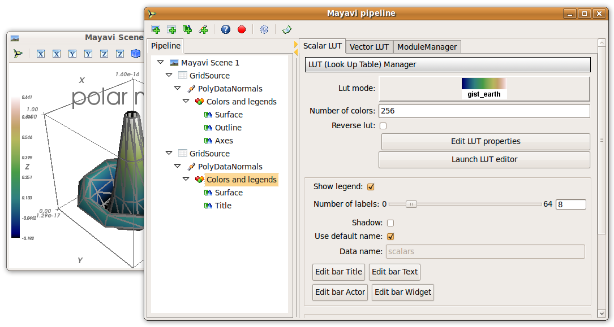
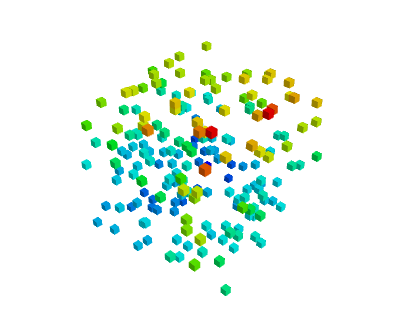

| autor: | Gaël Varoquaux |
|---|
Truco
Mayavi is an interactive 3D plotting package. matplotlib can also do simple 3D plotting, but Mayavi relies on a more powerful engine ( VTK ) and is more suited to displaying large or complex data.
Contenidos de los capítulos
El módulo mayavi.mlab proporciona funciones simples para hacer gráficas aplicables a arrays numpy. Puedes probar las funciones usando IPython inicializando IPython con la opción --gui=wx.
Consejo
Points in 3D, represented with markers (or “glyphs”) and optionaly different sizes.
x, y, z, value = np.random.random((4, 40))
mlab.points3d(x, y, z, value)
Consejo
A line connecting points in 3D, with optional thickness and varying color.
mlab.clf() # Clear the figure
t = np.linspace(0, 20, 200)
mlab.plot3d(np.sin(t), np.cos(t), 0.1*t, t)

Consejo
A surface given by its elevation, coded as a 2D array
mlab.clf()
x, y = np.mgrid[-10:10:100j, -10:10:100j]
r = np.sqrt(x**2 + y**2)
z = np.sin(r)/r
mlab.surf(z, warp_scale='auto')
Consejo
A surface mesh given by x, y, z positions of its node points
mlab.clf()
phi, theta = np.mgrid[0:np.pi:11j, 0:2*np.pi:11j]
x = np.sin(phi) * np.cos(theta)
y = np.sin(phi) * np.sin(theta)
z = np.cos(phi)
mlab.mesh(x, y, z)
mlab.mesh(x, y, z, representation='wireframe', color=(0, 0, 0))
Nota
Una superficie se encuentra definida por puntos connectados formando triángulos o polígonos. En mlab.surf y mlab.mesh, el layout de los arrays proporciona de forma implícita las conexiones y la conectividad. Ver también mlab.triangular_mesh.
Nuestros datos suelen ser algo más que puntos y valores: necesitan información de la conectividad
Consejo
If your data is dense in 3D, it is more difficult to display. One option is to take iso-contours of the data.
mlab.clf()
x, y, z = np.mgrid[-5:5:64j, -5:5:64j, -5:5:64j]
values = x*x*0.5 + y*y + z*z*2.0
mlab.contour3d(values)

Esta función funciona con un grid ortogonal regular: El array de valores es un array 3D que proporciona la forma del grid.
Truco
Aquí se puede ver una lista de funciones útiles para el control de la figura en uso
| Obtener la figura en uso: | mlab.gcf() |
| Limpiar la figura en uso: | mlab.clf() |
| Establecer la figura a usar: | mlab.figure(1, bgcolor=(1, 1, 1), fgcolor=(0.5, 0.5, 0.5) |
| Guardar la figura a un fichero imagen: | mlab.savefig('foo.png', size=(300, 300)) |
| Cambiar la vista: | mlab.view(azimuth=45, elevation=54, distance=1.) |
Truco
En general, muchas propiedades de los distintos objetos presentes en la figura podrían cambiarse. Si las visualizaciones son creadas via funciones presentes en el módulo mlab, la forma más sencilla de modificar estas visualizaciones sería modificando los argumentos de las palabras clave (keywords) de cada función usada tal como se describe en la documentación (docstrings).
Ejemplo de documentación (`docstring`, lo dejamos en inglés puesto que es como te aparecerá cuando lo veas en el código): mlab.mesh
Plots a surface using grid-spaced data supplied as 2D arrays.
Function signatures:
mesh(x, y, z, ...)
x, y, z are 2D arrays, all of the same shape, giving the positions of the vertices of the surface. The connectivity between these points is implied by the connectivity on the arrays.
For simple structures (such as orthogonal grids) prefer the surf function, as it will create more efficient data structures.
Keyword arguments:
color: the color of the vtk object. Overides the colormap, if any, when specified. This is specified as a triplet of float ranging from 0 to 1, eg (1, 1, 1) for white. colormap: type of colormap to use. extent: [xmin, xmax, ymin, ymax, zmin, zmax] Default is the x, y, z arrays extents. Use this to change the extent of the object created. figure: Figure to populate. line_width: The with of the lines, if any used. Must be a float. Default: 2.0 mask: boolean mask array to suppress some data points. mask_points: If supplied, only one out of ‘mask_points’ data point is displayed. This option is usefull to reduce the number of points displayed on large datasets Must be an integer or None. mode: the mode of the glyphs. Must be ‘2darrow’ or ‘2dcircle’ or ‘2dcross’ or ‘2ddash’ or ‘2ddiamond’ or ‘2dhooked_arrow’ or ‘2dsquare’ or ‘2dthick_arrow’ or ‘2dthick_cross’ or ‘2dtriangle’ or ‘2dvertex’ or ‘arrow’ or ‘cone’ or ‘cube’ or ‘cylinder’ or ‘point’ or ‘sphere’. Default: sphere name: the name of the vtk object created. representation: the representation type used for the surface. Must be ‘surface’ or ‘wireframe’ or ‘points’ or ‘mesh’ or ‘fancymesh’. Default: surface resolution: The resolution of the glyph created. For spheres, for instance, this is the number of divisions along theta and phi. Must be an integer. Default: 8 scalars: optional scalar data. scale_factor: scale factor of the glyphs used to represent the vertices, in fancy_mesh mode. Must be a float. Default: 0.05 scale_mode: the scaling mode for the glyphs (‘vector’, ‘scalar’, or ‘none’). transparent: make the opacity of the actor depend on the scalar. tube_radius: radius of the tubes used to represent the lines, in mesh mode. If None, simple lines are used. tube_sides: number of sides of the tubes used to represent the lines. Must be an integer. Default: 6 vmax: vmax is used to scale the colormap If None, the max of the data will be used vmin: vmin is used to scale the colormap If None, the min of the data will be used
Ejemplo:
In [1]: import numpy as np
In [2]: r, theta = np.mgrid[0:10, -np.pi:np.pi:10j]
In [3]: x = r*np.cos(theta)
In [4]: y = r*np.sin(theta)
In [5]: z = np.sin(r)/r
In [6]: from enthought.mayavi import mlab
In [7]: mlab.mesh(x, y, z, colormap='gist_earth', extent=[0, 1, 0, 1, 0, 1])
Out[7]: <enthought.mayavi.modules.surface.Surface object at 0xde6f08c>
In [8]: mlab.mesh(x, y, z, extent=[0, 1, 0, 1, 0, 1],
...: representation='wireframe', line_width=1, color=(0.5, 0.5, 0.5))
Out[8]: <enthought.mayavi.modules.surface.Surface object at 0xdd6a71c>
Truco
Se pueden añadir piezas extra en la figura para mostrar información de interés, como una barra de colores o un título.
In [9]: mlab.colorbar(Out[7], orientation='vertical')
Out[9]: <tvtk_classes.scalar_bar_actor.ScalarBarActor object at 0xd897f8c>
In [10]: mlab.title('Malla polar')
Out[10]: <enthought.mayavi.modules.text.Text object at 0xd8ed38c>
In [11]: mlab.outline(Out[7])
Out[11]: <enthought.mayavi.modules.outline.Outline object at 0xdd21b6c>
In [12]: mlab.axes(Out[7])
Out[12]: <enthought.mayavi.modules.axes.Axes object at 0xd2e4bcc>
Advertencia
extensión: Si especificamos la extensión de un objeto gráfico, mlab.outline' y `mlab.axes no tendrán esa extensión por defecto y habría que especificarla.
mlab_scripting_interface.rst interaction.rst
Truco
Probablemente, la manera más rápida y efectiva de crear visualizaciones bonitas con Mayavi sería interactuando y modificando los distintos ajustes de forma interactiva.
Pulsa en el botón ‘Mayavi’ que se encuentra en la figura para poder controlar las propiedades de los objetos con la ayuda de ventanas de diálogos.
Para descubrir con qué códido podríamos modificar los cambios realizados de forma interactiva podemos pulsar sobre el botón rojo cuando vayamos a realizar las modificaciones y se generarán las correspondientes líneas de código.
Suppose we are simulating the magnetic field generated by Helmholtz coils. The examples/compute_field.py script does this computation and gives you a B array, that is (3 x n), where the first axis is the direction of the field (Bx, By, Bz), and the second axis the index number of the point. Arrays X, Y and Z give the positions of these data points.
Excercise
Visualize this field. Your goal is to make sure that the simulation code is correct.
Suggestions
Truco
As we see above, it may be desirable to look at the same data in different ways.
Mayavi visualization are created by loading the data in a data source and then displayed on the screen using modules.
This can be seen by looking at the “pipeline” view. By right-clicking on the nodes of the pipeline, you can add new modules.
Quiz
Why is it not possible to add a VectorCutPlane to the vectors created by mayavi.mlab.quiver3d()?
Truco
Data comes in different descriptions.
|
 |
|---|---|
| Unstructured and unconnected data: a scatter | Structured and connected data: a field |
| mlab.points3d, mlab.quiver3d | mlab.contour3d |
Data sources corresponding to scatters can be created with mayavi.mlab.pipeline.scalar_scatter() or mayavi.mlab.pipeline.vector_scatter(); field data sources can be created with mlab.pipeline.scalar_field() or mlab.pipeline.vector_field().
Exercice:
Note that one of the difficulties is providing the data in the right form (number of arrays, shape) to the functions. This is often the case with real-life data.
Ver también
Sources are described in details in the Mayavi manual.
If you create a vector field, you may want to visualize the iso-contours of its magnitude. But the isosurface module can only be applied to scalar data, and not vector data. We can use a filter, ExtractVectorNorm to add this scalar value to the vector field.
Filters apply a transformation to data, and can be added between sources and modules
Excercice
Using the GUI, add the ExtractVectorNorm filter to display iso-contours of the field magnitude.
The mlab scripting layer builds pipelines for you. You can reproduce these pipelines programmatically with the mlab.pipeline interface: each step has a corresponding mlab.pipeline function (simply convert the name of the step to lower-case underscore-separated: ExtractVectorNorm gives extract_vector_norm). This function takes as an argument the node that it applies to, as well as optional parameters, and returns the new node.
For example, iso-contours of the magnitude are coded as:
mlab.pipeline.iso_surface(mlab.pipeline.extract_vector_norm(field),
contours=[0.1*Bmax, 0.4*Bmax],
opacity=0.5)
Excercice
Using the mlab.pipeline interface, generate a complete visualization, with iso-contours of the field magnitude, and a vector cut plane.
(click on the figure for a solution)
Truco
To make movies, or interactive application, you may want to change the data represented on a given visualization.
If you have built a visualization, using the mlab plotting functions, or the mlab.pipeline function, we can update the data by assigning new values to the mlab_source attributes
x , y , z = np.ogrid[-5:5:100j ,-5:5:100j, -5:5:100j]
scalars = np.sin(x * y * z) / (x * y * z)
iso = mlab.contour3d(scalars, transparent=True, contours=[0.5])
for i in range(1, 20):
scalars = np.sin(i * x * y * z) /(x * y * z)
iso.mlab_source.scalars = scalars
Ver también
More details in the Mayavi documentation
Event loops
For the interaction with the user (for instance changing the view with the mouse), Mayavi needs some time to process these events. The for loop above prevents this. The Mayavi documentation details a workaround
It is very simple to make interactive dialogs with Mayavi using the Traits library (see the dedicated chapter Traits: building interactive dialogs).
from traits.api import HasTraits, Instance
from traitsui.api import View, Item, HGroup
from mayavi.core.ui.api import SceneEditor, MlabSceneModel
def curve(n_turns):
"The function creating the x, y, z coordinates needed to plot"
phi = np.linspace(0, 2*np.pi, 2000)
return [np.cos(phi) * (1 + 0.5*np.cos(n_turns*phi)),
np.sin(phi) * (1 + 0.5*np.cos(n_turns*phi)),
0.5*np.sin(n_turns*phi)]
class Visualization(HasTraits):
"The class that contains the dialog"
scene = Instance(MlabSceneModel, ())
def __init__(self):
HasTraits.__init__(self)
x, y, z = curve(n_turns=2)
# Populating our plot
self.plot = self.scene.mlab.plot3d(x, y, z)
# Describe the dialog
view = View(Item('scene', height=300, show_label=False,
editor=SceneEditor()),
HGroup('n_turns'), resizable=True)
# Fire up the dialog
Visualization().configure_traits()
Truco
Let us read a bit the code above (examples/mlab_dialog.py).
First, the curve function is used to compute the coordinate of the curve we want to plot.
Second, the dialog is defined by an object inheriting from HasTraits, as it is done with Traits. The important point here is that a Mayavi scene is added as a specific Traits attribute (Instance). This is important for embedding it in the dialog. The view of this dialog is defined by the view attribute of the object. In the init of this object, we populate the 3D scene with a curve.
Finally, the configure_traits method creates the dialog and starts the event loop.
Ver también
There are a few things to be aware of when doing dialogs with Mayavi. Please read the Mayavi documentation
We can combine the Traits events handler with the mlab_source to modify the visualization with the dialog.
We will enable the user to vary the n_turns parameter in the definition of the curve. For this, we need:
from traits.api import Range, on_trait_change
class Visualization(HasTraits):
n_turns = Range(0, 30, 11)
scene = Instance(MlabSceneModel, ())
def __init__(self):
HasTraits.__init__(self)
x, y, z = curve(self.n_turns)
self.plot = self.scene.mlab.plot3d(x, y, z)
@on_trait_change('n_turns')
def update_plot(self):
x, y, z = curve(self.n_turns)
self.plot.mlab_source.set(x=x, y=y, z=z)
view = View(Item('scene', height=300, show_label=False,
editor=SceneEditor()),
HGroup('n_turns'), resizable=True)
# Fire up the dialog
Visualization().configure_traits()
Truco
Full code of the example: examples/mlab_dialog.py.
Exercise
Using the code from the magnetic field simulation, create a dialog that enable to move the 2 coils: change their parameters.
Hint: to define a dialog entry for a vector of dimension 3
direction = Array(float, value=(0, 0, 1), cols=3, shape=(3,))
You can look at the Coil Application to see a full-blown application for coil design in 270 lines of code.

{kind=link}
{kind=link}
{kind=link}
{kind=link}
{kind=link}
{kind=link}
{kind=link}
{kind=link}
{kind=link}
{kind=link}